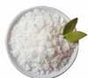

Cera de soja como recurso renovable y sustentable:
La cera de soja ecológica es un tipo de cera obtenida de la epidermis de la planta de soja Glycine max pero que a diferencia de las ceras de parafina u otras más tradicionales, como la de abeja, no tiene implicación animal, ni sustancias tóxicas perjudiciales como los bencenos, acetonas o derivados de petróleo que sí que posee la cera de parafina.
Esto la convierte en un material renovable y biodegradable, un producto sostenible.
La cera de soja para velas es vegana, al no poseer derivados químicos y ser puramente natural emite un 90% menos de hollín y no emite CO2 generando aromas mucho más agradables y duraderos, además de evitar manchas humeantes en paredes o muebles.
Su combustión no supone ningún riesgo para la salud, ni aumenta los valores de toxicidad del medio ambiente ya que no aumenta los niveles de CO2, ni produce hollín. Se obtiene convirtiendo el aceite de soja en grasa sólida.
El punto de fusión es muy bajo, hablamos de 48° a 55°, por ese motivo las velas deben realizarse siempre en cuencos o envases de algún tipo. Su bajo punto de fusión evita quemaduras que sí ocasionan otras ceras y los derrames son mucho más fáciles de limpiar, pues la cera de soja puede eliminarse ¡sin dejar manchas!
Duran más horas encendidas (hasta tres veces más que las velas de parafina) y perfuman más intensamente los ambientes. Al ser cera de soja bajo punto de fusión, su durabilidad llega a ser hasta el triple que la de una vela convencional sin desperdiciar un gramo de cera.
Se pueden colorear con pigmentos naturales y son ideales para masajes cuando se le incorporan diferentes tipos de aceites y mantecas.